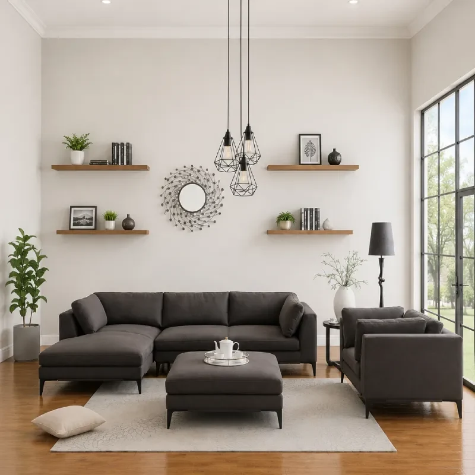
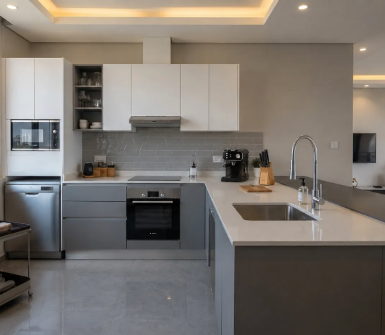
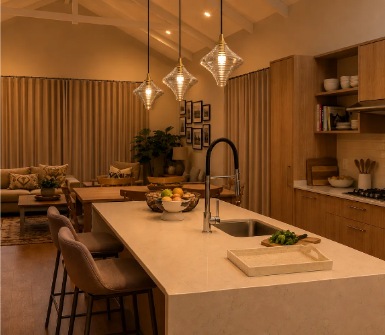
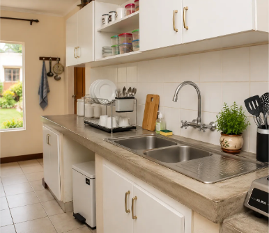
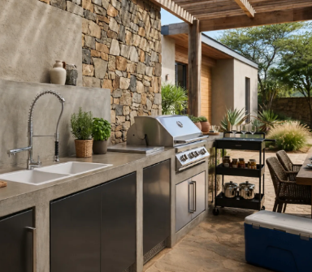

Drag to look · Pinch to zoom
Preparing your room…
Drag to look around · Scroll or pinch to zoom
Find the colours, textures and finishing touches that make your space feel like home.

Inspired by the TACC collection



Choose your starting point. Explore everything at your own pace.
Choose upholstery, curtains or cushions. Compare fabrics in a room before making your selection.
These are sample furniture shapes for trying fabrics. Choose a set to open its room preview.
Choose a room. Explore finishes. Bring your space to life.